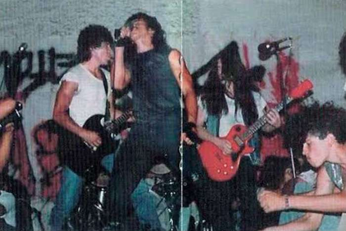

La música metal es un género de música rock que se caracteriza por su sonido pesado, agresivo y rítmicamente complejo. Surgió a finales de la década de 1960 y principios de los 70, principalmente en el Reino Unido y Estados Unidos, como una evolución del rock duro (hard rock) y el blues rock, y se consolidó en la década de 1980 con el auge de subgéneros como el heavy metal, el thrash metal, el death metal, y muchos otros estilos extremos.
El metal colombiano es una parte integral de la escena musical de Colombia, y ha tenido un crecimiento significativo desde sus primeros días en los años 80 y 90. A lo largo de las décadas, el metal en Colombia ha evolucionado, con un énfasis en la creación de una identidad local, fusionando las influencias internacionales del metal con elementos culturales colombianos. La escena metalera colombiana ha sido activa y diversa, abarcando una amplia gama de subgéneros, desde el heavy metal clásico hasta estilos más extremos como el death metal, black metal, thrash metal, doom metal, y el metalcore.
El ultrametal colombiano es un subgénero del metal que se originó en Colombia y se caracteriza por su estilo extremo y agresivo. Aunque no es un término oficialmente reconocido en todos los círculos del metal global, en Colombia ha sido utilizado para describir un tipo de metal pesado que fusiona varias influencias de géneros como el death metal, black metal, thrash metal y grindcore, con un enfoque particular en la intensidad, la brutalidad y la experimentación sonora.
Algunos de los elementos clave que definen el ultrametal colombiano incluyen:
Bandas de ultrametal mas influyentes
Sus orígenes se remontan a la década de 1980 en medio de un ambiente de guerra, muerte y difíciles condiciones de vida generados por el Conflicto Armado Colombiano; en medio de esos acontecimientos nació este movimiento que tuvo relación con el Black metal Noruego.
El black metal es un subgénero del metal extremo que se caracteriza por su sonido agresivo, oscuro y atmosférico, así como por su enfoque en temas como el ocultismo, la mitología, la desesperación, la anti-religión y el nihilismo. A menudo, el black metal tiene una estética y un enfoque ideológico muy distintos de otros subgéneros del metal, lo que lo ha convertido en un movimiento con una identidad propia dentro de la escena musical.
| Año | Nombre | Pais |
|---|---|---|
| 1984 | Mayhem | Noruega |
| 1991 | Burzum | Noruega |
| 1986 | Darkthrone | Noruega |
| 1990 | Immortal | Noruega |
| 1991 | Emperorr | Noruega |
| 1983 | Bathory | Suecia |
| 1979 | Venom | Reino Unido |
| 1991 | Cradle of Filth | Reino Unido |